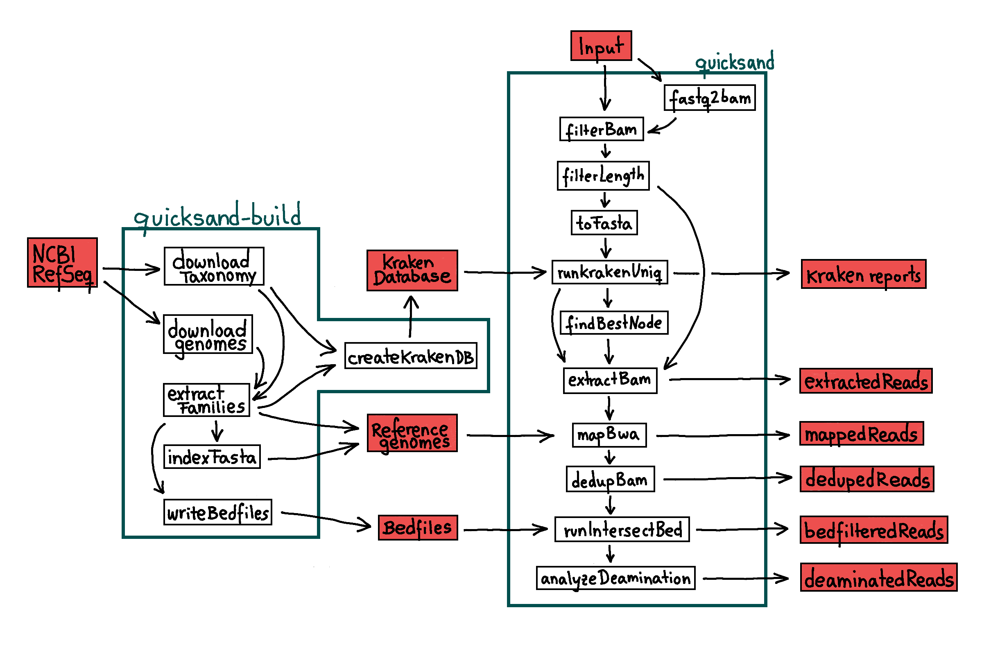

Description
{kind=link}
This section describes the processes implemented in the quicksand pipeline. See quicksand-build for a description of the quicksand-build pipeline
Workflow
The basic workflow of the quicksand pipline consists of a metagenomic classification, a mapping and a basic analysis of the alignment. The pipeline
produces taxonomic profiles for the analyzed input files, as well as the binned bam files, grouped by redgroup and taxonomy for all levels of the
pipeline - as shown in the figure above. Each process is in detail described in the following chapters
EstimateCrossContamination
WIP
fastq2bam
All fastq files entering the pipeline are converted to unpaired and unmapped bam files using samtools import -0.
In case of paired end fastq files, make sure to merge them before using the pipeline.
fiterBam
Bam files are filtered based on the provided filterflag using samtools view -F. By default paired-end reads are removed from the
bam file.
filterLength
Using a custom bam-lengthfilter package, sequences are removed from the bam file that fall below the --bamfilter_length_cutoff threshold (default: 35bp)
toFasta
As preparation for the krakenuniq run, bam files are converted to fasta files
runKrakenUniq
Sequences contained in the fasta file are classified by the metagenomic classifier krakenuniq. Quicksand uses krakenuniq with a precompiled
database created from the current non-redundant mtDNA RefSeq database with a default kmer size of 22 (see quicksand-build or Create datastructure).
The speed of krakenuniq allows for a quick sorting of sequences into families. To filter out false-positive assignments, families are
removed from the assignment falling below the minimum number of reads (--krakenuniq_min_reads) and the minimal number of kmers (--krakenuniq_min_kmers)
on the family node. The result of this process is a taxonomic profile of the readgroup.
findBestNode
This process parses the kraken-reports. For each assigned family reported by krakenuniq, the node with the highest number of assigned unique kmers is picked as the taxon representative for that family.
extractBam
Using the kraken-report and the length-filtered bam file, this process collects all sequences assigned to one clade into a new bam
file. Extraction happens either on the family or order-level, as specified with the --taxlvl flag, using the custom bamfilter package.
mapBWA
The extracted sequences are mapped against all the reference genomes of species belonging to the 'bestNode' found in the 'findBestNode' process
using the bwa bam2bam command of the network-aware fork of BWA with
ancient parameters (n 0.01 -o 2 -l 16500). Unmapped sequences or sequences with a mapping quality of less than 25 are removed from the alignment
filterMappedBam
Mapped bam files are filtered for the set alignment quality score
dedupBam
Exact PCR-duplicates are collapsed into unique sequences using bam-rmdup based on the sharing of identical alignment start and end coordinates. From all mapped genomes, the one with the highest numbers of basepairs covered is picked as _the_ representative species for the subsequent steps.
runIntersectBed
The deduped alignments are then depleted of reads that overlap sites marked as non-informative by dustmasker. That step is skipped
for families with a fixed reference genome (see --fixed flag)
analyzeDeamination
The final step(s) in the pipeline look for C to T substitutions in the query sequences in respect to the aligned reference genome. Ancient DNA shows characteristic C to T substitutions at the 3’ and 5’ ends of DNA fragments - a degradation pattern used to identify ancient DNA. Families which sequences show more than 10% of terminal C bases in the reference genome replaced by a T are reported as being ancient (++).
extractDeaminatedReads
For families with a fixed reference genome (see --fixed flag), extract deaminated reads into two different .bam files. One file with sequences that
show C to T substitutions on one of the terminal base pairs and one file that looks at the first and last 3 terminal base positions.
maskDeamination
For families with a fixed reference genome (see --fixed flag), take the extracted deaminated reads and set the alignment quality score of the last
three terminal T bases to 15.